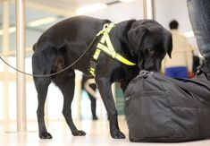

NASDU Certified
Enquire
Training of Detection Dogs
Professional imprinting and certification of detection K9s to NASDU and international standards. Covering narcotics — cocaine, heroin, cannabis, methamphetamine — and full explosives/IED detection. Reward-based conditioning for reliable, repeatable operational performance.
Narcotics detection (cocaine, heroin, cannabis)
IED and explosives detection (EDD)
Passive and active indication training
Certificate on completion · Annual recertification